足不出户的玩乐
拍摄地点：桂林香格里拉酒店
现代人年轻人对于度假，希望到一个酒店进行彻底的放松。
他们排斥游山玩水的逛景点。但是，到了一个新的地方，只是无聊的呆在酒店，当然不是norma崇尚的极致生活咯。
在桂林的香格里拉，你就可以体验到，足不出户却又玩乐到桂林特色哦！
第二期
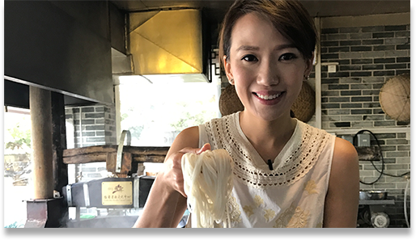
桂林地道小吃（上）
拍摄地点：桂林米粉文化中心
到桂林当然是要吃红遍全国的“桂林米粉”，当全国各大城市遍地开满“桂林米粉”店时，更不用提桂林市也是满街的米粉店。那么到底哪一家米粉店是桂林老人们儿时最地道的米粉味呢？
《桂林食记》向您推荐——桂林米粉文化中心视频
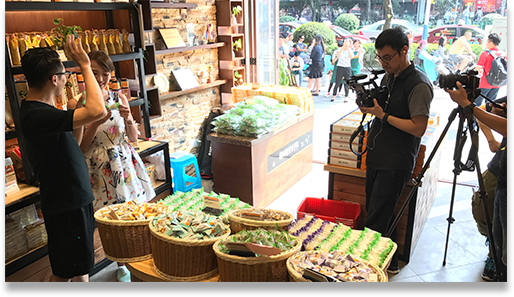
游走东西巷
拍摄地点：正阳东西巷
桂林东西巷充满着历史文化韵味，这里出了很多名家名人，每一栋建筑都有着它的故事。在这里，当然也少不了桂林的知名美食啦。
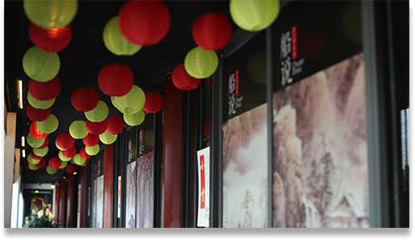
桂林地道小吃（下）
拍摄地点：船说
来到桂林，你一定会发现桂林人爱吃鸡爱吃鱼。而且桂林的鸡和鱼都特别鲜美。但是，吃惯了传统做法，一定是一种创新的方式才能打动现在挑剔的食客们。
船说就是这么一家充满创意的餐馆。
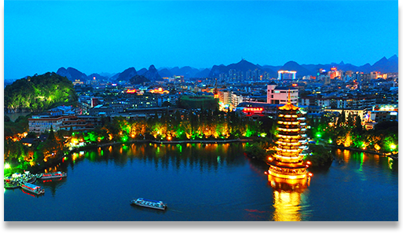
只想多看你一眼
拍摄地点：维也纳餐厅、两江四湖游船
来到桂林，是一定要看两江四湖和双塔的。不同的角度有不一样的视觉体验哦。
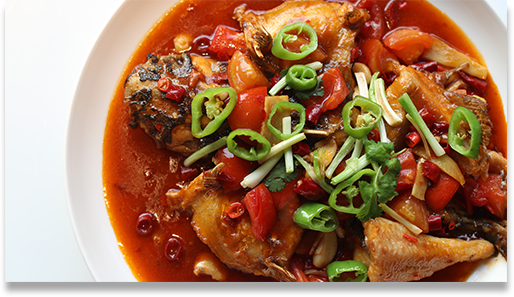
传统vs新味
拍摄地点：阳朔爱吃鱼、勾味王
在阳朔满大街的啤酒鱼，但是到底哪家才是好吃的啤酒鱼呢？传统桂林菜是超级平民化的，但是有一家餐馆勾味王将传统桂林菜做出了新时尚。
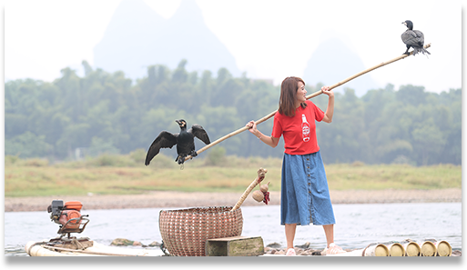
阳朔慢生活
拍摄地点：十里画廊、一境山庄
平时在大城市超级快的生活节奏，休假的时候就要试着放慢脚步啊。体验一次与世隔绝的慢生活吧。
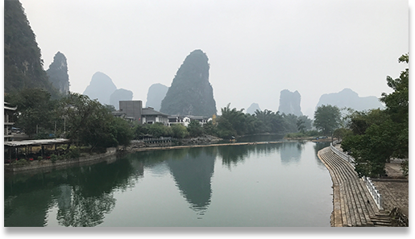
十里画廊360
拍摄地点：十里画廊
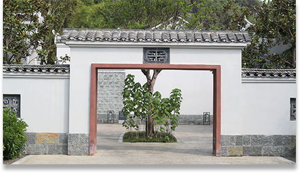
高逼格的阳朔
拍摄地点：阳朔悦榕庄、直升机乘坐点
乘坐直升机俯瞰漓江，绝对是这次行程中最高大上的一项体验啦！
最后一天行程，Norma决定在悦榕庄里好好享受一下。体验了纯天然泰式spa，泰国技师让你仿佛一秒回曼谷。面临大山的悦榕庄每天日落时，会举行超级特色的日落仪式，正可以美好地结束此时行程。
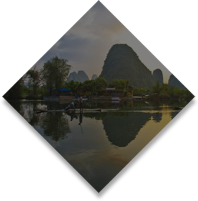 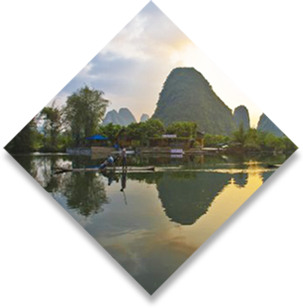
桂林+阳朔5日自由行·首尾2晚喜来登2晚阳朔酒店#桂林食记#
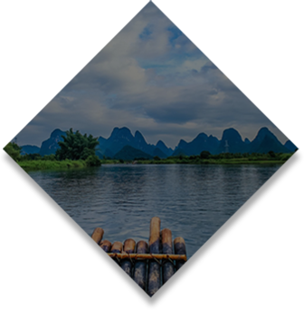 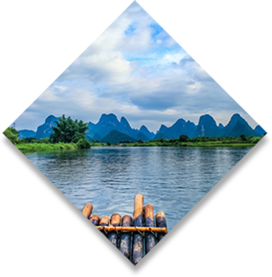
桂林+阳朔5日自由行·首尾桂林中间2阳朔赠接机·#桂林食记#
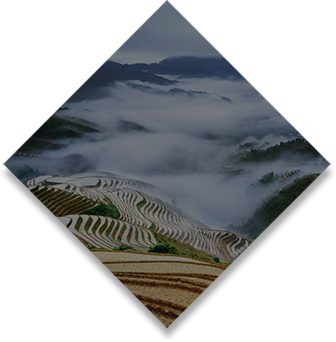 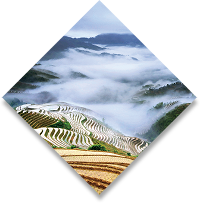
广西桂林+阳朔+漓江4日3晚跟团游(4钻)·自营全包价 漓江三星船+椿记+城徽 桂林食记
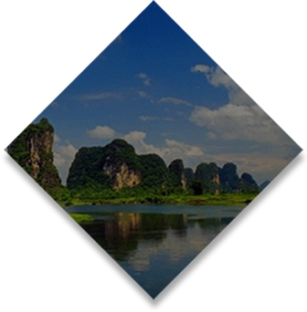 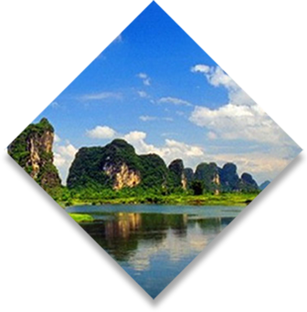
桂林+漓江+龙脊梯田+阳朔4日3晚跟团游(5钻)·自营全包价 大公馆+椿记 赠Iphone7桂林食记
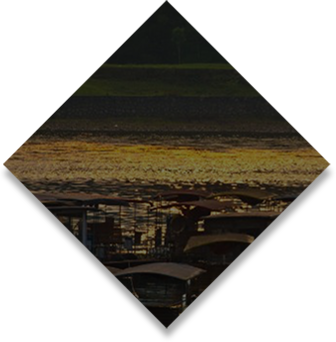 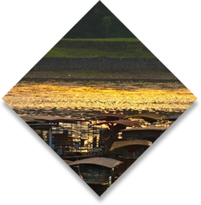
广西桂林+阳朔+漓江5日4晚跟团游(4钻)·索道揽梯田全景 椿记+温泉+赏双秀 桂林食记